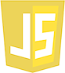
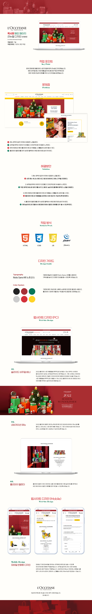

HTML
CSS

사용자의 경험을 중요하게 고려하여 페이지를 디자인하며, 설계부터 탄탄한 시멘틱 구조와 감각적인 디자인을 추구합니다.
스크롤바를 내리면 작품을 감상할 수 있습니다.
안녕하세요, 원하는 것을 실현하는 웹퍼블리셔 김은지입니다.
새로운 것을 탐험하는 것을 좋아하는 저는 트렌드가 빠르게 변하고,
새로운 기술이 끊임없이 등장하는 웹디자인 분야를 즐겁게 공부하고 있습니다.
1px 차이로도 완성도가 다르게 느껴지는 것이 UI디자인이라 생각합니다.
작은 디테일의 차이를 아는 UX/UI 디자이너가 되고 싶습니다.
더 나은 UI를 위해 꾸준히 노력하는 저의 모습이 이곳에 담겨있습니다.
웹표준/웹접근성/SEO를 고려한 시멘틱 마크업과 SCSS 활용이 가능합니다.
플러그인 없이 Javascript/jQuery/React 로직 구현이 가능합니다.
사용자가 보기 편안하되, 세련된 스타일을 유지하는 것이 제가 추구하는 UI입니다.
페이지 디자인에 필요한 섬세한 이미지 리터칭과 감각적인 UI 디자인을 구현합니다.
프로젝트의 완성도는 작은 디테일로 결정된다고 생각합니다.
남다른 꼼꼼함으로 놓치기 쉬운 디테일까지 캐치하고
실수가 생기지 않도록 두번 세번 검토하는 편입니다.
성실함은 누구나 가질 수 있는 것 같지만 사실 갖추기 가장 어렵고, 그만큼 큰 장점이라고 생각합니다. 어떤 일이든 성실하게 임하면 그만큼 성장한다고 생각하고 훗날의 저에게 큰 도움이 될 거라는 믿음을 가지고 있습니다.
언제나 맡은 일에 책임감을 가지고 임합니다.
제 손으로 시작한 일은 곧 저의 커리어라고 생각하기 때문에
허투루 작업하지 않고, 마무리까지 최선을 다합니다.
꾸준하게만 해도 성공한다라는 말이 있습니다.
꾸준하게 하기가 그만큼 힘들다는 뜻이 아닐까 싶습니다.
그래서 저는 이 분야에서 꾸준하게 공부하며
한걸음 한걸음 더 나아가고자 매일 노력하고 있습니다.
Loccitane Renewal Design
현재 진행 중인 홀리데이 시즌 컨셉에 맞게 리뉴얼 디자인했습니다.
메인 비주얼 배너 이미지를 슬라이드용으로 직접 제작했으며
모든 섹션에 조금씩 변화를 주어 UI 디자인을 보완했습니다.
작업프로그램 : Photoshop, Visual Studio Code
작업기여도 : 100% 개인 작업


Saeng Gwa Bang Renewal Design
경복궁 생과방의 이미지를 살려 리뉴얼 디자인하였습니다.
동적인 분위기를 더하기 위해 비주얼 슬라이드를 추가하고,
메인 페이지에서 전체 음료와 디저트 메뉴를 볼 수 있도록 수정했습니다.
작업프로그램 : Photoshop, Visual Studio Code
작업기여도 : 100% 개인 작업


Seoul Botanic Park Renewal Design
기존 서울식물원 홈페이지 메인페이지를 리뉴얼 디자인하였습니다.
식물원의 분위기를 담기 위해 생동감 넘치는 이미지로 비주얼 영역을 구현했고,
메인 페이지에서 다양한 프로그램을 볼 수 있도록 구성했습니다.
작업프로그램 : Photoshop, Visual Studio Code
작업기여도 : 100% 개인 작업

fol:in Main Page Design
폴인 사이트의 메인페이지를 직접 구현하였습니다.
비주얼 영역의 무한 슬라이드를 플러그인 없이 코딩했으며
세세한 스타일과 레이아웃 구성을 연구하며 재현했습니다.
작업프로그램 : Photoshop, Visual Studio Code
작업기여도 : 100% 개인 작업
Let's prevent COVID-19 together
올바른 코로나 예방 에티켓을 학습할 수 있도록
유도하는 미니게임으로 게임의 컨셉을 정하는 기획부터
마무리 단계까지 자체적으로 디자인·개발한 프로젝트입니다.
작업프로그램 : Photoshop, Illustrator, Visual Studio Code
작업기여도 : 팀 프로젝트 (기획·디자인 담당)
Jeju Here Main Page Design
관광지, 맛집, 즐길거리, 축제로 카테고리를 나누어
제주도 여행에 필요한 정보들을 소개하는 사이트입니다.
자료조사부터 코딩까지 개인 작업으로 진행했습니다.
작업프로그램 : Photoshop, Visual Studio Code
작업기여도 : 100% 개인 작업

Personal Profile Site Design
프로필 사이트의 제작 과정을 담은 자료를 보실 수 있습니다.
저의 역량과 지금까지 작업한 포트폴리오를
잘 전달할 수 있도록 노력해서 만든 사이트입니다.
작업프로그램 : Photoshop, Visual Studio Code
작업기여도 : 100% 개인 작업